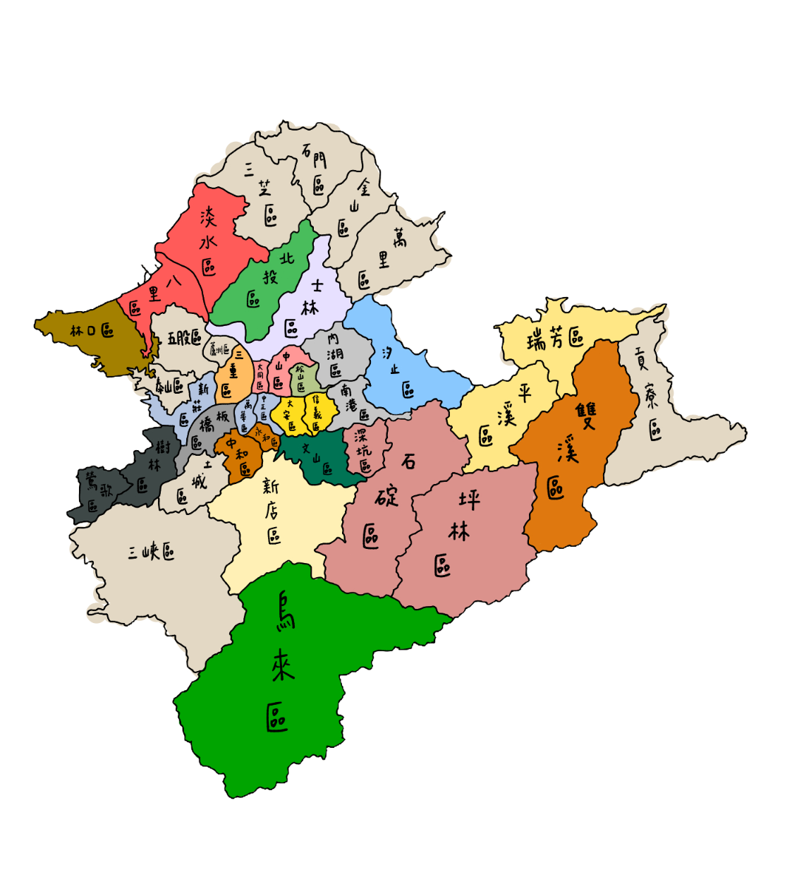
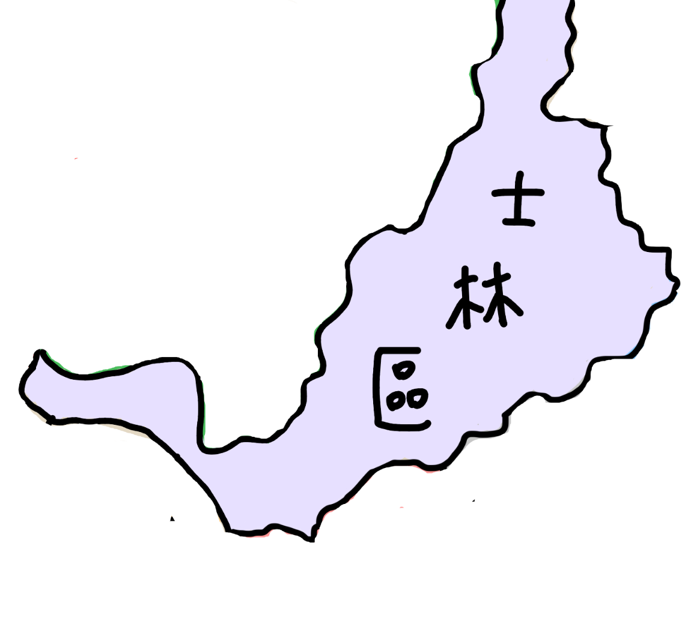
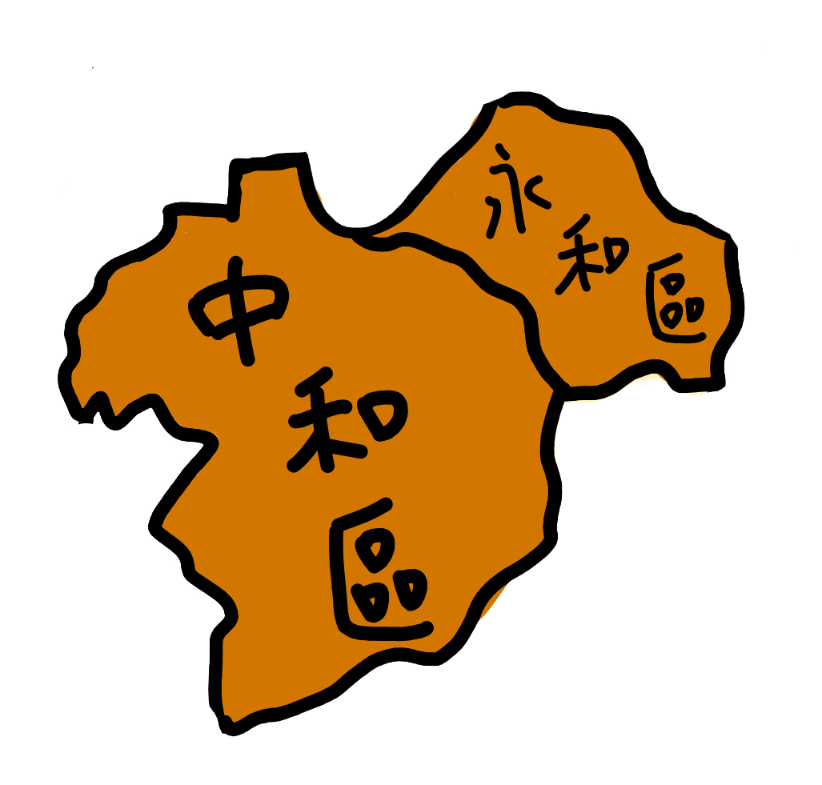
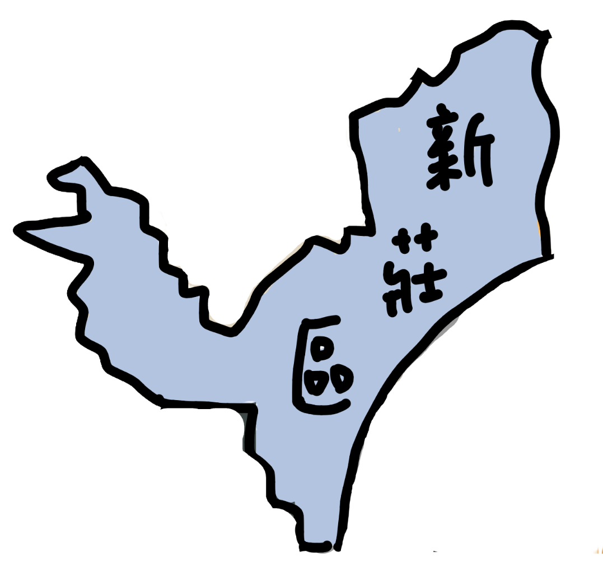

雙北是什麼？有什麼好探索的？
台北市，作為台灣的首都，是全國政治與文化的象徵；而新北市則以全台最多的人口與多樣的城鄉風貌承載著生活的脈動。這兩座相鄰的直轄市，不僅是台灣面向世界的重要門面，更共同形成了推動經濟發展的重要引擎。 然而，在繁忙與現代化的外表背後，雙北還蘊藏著深厚的文化底蘊，以及那些不易被發現、卻值得細細品味的城市美感。因此，本網站致力於帶領你探索雙北鮮為人知的一面，發掘大街小巷中的故事、風景與情感。 期待造訪這裡的你，能與我們一起踏上探索之旅，在熟悉的城市中找回新的驚喜與感動。
熱門行政區 TOP 3

士林區
身為台北市最大的行政區，這裡真的有太多地方可以探索、太多東西可以體驗了。喜歡大自然，可以去陽明山看花、看草、看山、看牛；喜歡刺激的體驗，可以去兒童新樂園玩；喜歡逛街、吃東西，可以去士林夜市體驗觀光客行程；想要環島，可以去社子島，騎著腳踏車（這個也是建議冬天再做比較好），欣賞淡水河畔的風景，不到一小時就可以完成願望了；想要穿越時空，可以去故宮博物院，從商朝到清朝的一切歷史文物，應有盡有。這裡可以滿足你的很多慾望、需求，交通也非常便利，真的有點太全能了。
查看介紹
中和、永和區
一直很好奇中和新蘆線的最後一站—南勢角，究竟是什麼地方，如今謎團終於被解開了，就是中和！我搭著捷運，從接近尾站的三民高中站，一路坐到底，就當我快要坐到懷疑人生的時候，我終於抵達了目的地。一出捷運站，步行一小段距離就可以走到「華新街」，這條街令我印象最深刻，因為我一直把它跟位在萬華的「華西街」搞混，查了資料後才發現：啊原來它不是賣蛇肉的那個，而是老師上課說過的「緬甸街」啦！走在那條街上，我彷彿搭上一班飛往東南亞國家的免費班機，那裡的人、事、物都充滿了南洋風情，真的是太酷了！這次其實是自己一個人去，但卻一點也沒有緊張、害怕的感覺，應該是因為這裡的人都蠻和善的，不管是印度烤餅的超local老闆，還是很熱情接待我的美術館工作人員，又或是那些在高溫下擺攤，但服務態度仍然滿分的夜市攤販老闆們，他們都讓我對這個地方留下很美好的印象。千萬不要再覺得這裡只有永和豆漿了啦！
查看介紹
新莊區
聽說這裡以輔大為界，被分成上、下新莊，我這次主要都是在上新莊走跳。這裡雖然「很都市」但卻沒有像台北那樣的壓迫感，我想是因為這裡保留了很多綠地的關係吧！下午差不多三四點的時候，來到運動公園，你會看到有很多「閒人」在活動，有由許多阿公阿嬤、叔叔阿姨組成的神秘團體，聚集在樹蔭下打太極拳，也有帶著愛犬四處閒晃或席地而坐的狗主人們；有剛從安親班下課，在遊樂區玩得不亦樂乎的小孩們，也有在操場上認真慢跑的健康市民。到了傍晚，你可以沿著中港大排，一路散步到宏匯廣場（建議這還是冬天做比較好(◐‿◑) ）逛街、吃晚餐，就這樣你將會度過一個很悠閒又充實的下午。
查看介紹